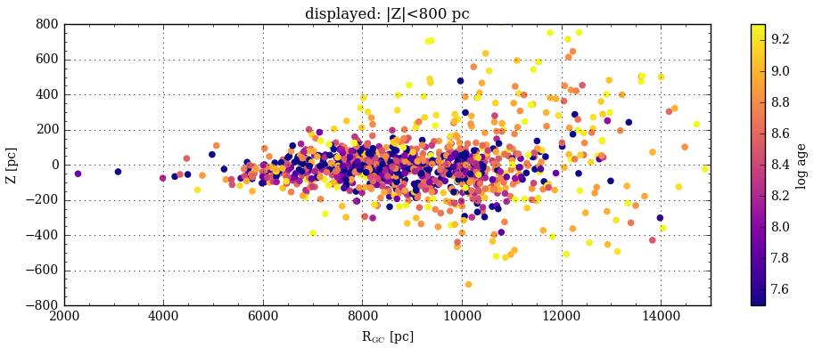
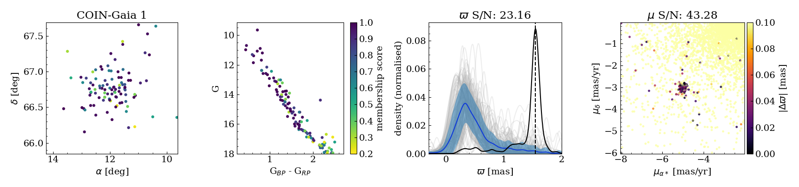
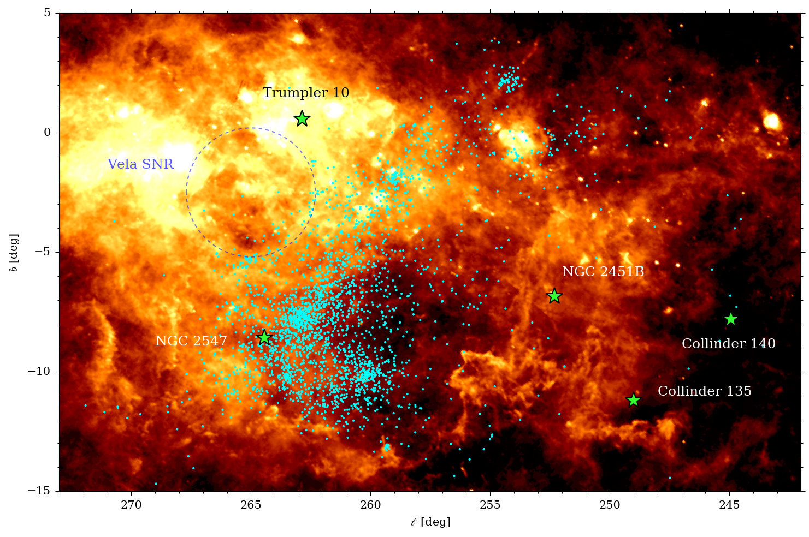
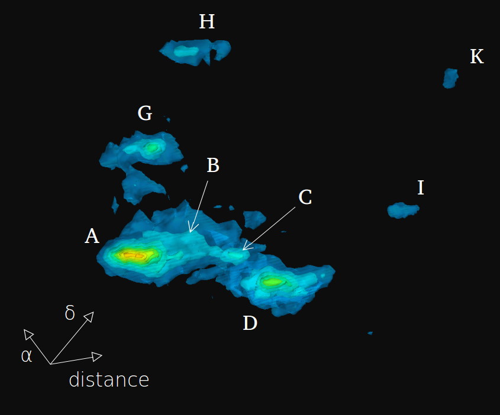

Postdoctoral fellow at Barcelona University, Spain.
My research focuses on stellar clusters and how they can be used to reveal the properties of our Galaxy. Their ages and distances can be estimated more easily than individual stars, which in turns gives us clues about the structure of the Milky Way and the processes that drove its assembly and evolution.
I obtained my PhD in astronomy in 2015 from the University of Padova (Italy), where I was active in the data analysis and scientific exploitation of the spectroscopic Gaia-ESO Survey. Part of my work involved determining chemical compositions of stars in clusters, as well as their age and distances, in order to study the distribution of elements in the Milky Way and its variation through time.
I have been a member of the Gaia Data Processing and Analysis Consortium (DPAC) since 2015, working on the validation of the catalogue produced by the ESA Gaia mission. The Gaia spacecraft is measuring positions, parallaxes (a proxy for distances) and motions for more than a billion stars, with unprecedented precision. This large catalogue can be used to produce 3D maps of our Galaxy and study the dynamical processes that take place in the Milky Way. It is also an ideal dataset for the development and application of data mining techniques, for instance to discover new stellar clusters.
Research
Characterising open clusters
Open clusters are groups of a dozen to several thousands of stars that were born together from the same parent molecular cloud, and remained bound by gravity. Their distances and ages can be estimated more easily than for individual stars, and they can be used to trace the structure of our Galaxy.
Bossini, D., Vallenari, A., Bragaglia, A., Cantat-Gaudin, T., et al. (2019), Age determination for 269 Gaia DR2 open clusters, A&A, 623, A108. 2019A&A...623A.108B
Soubiran, C., Cantat-Gaudin, T., Romero-Gómez, M., et al. (2018), Open cluster kinematics with Gaia DR2, A&A, 619, A155. 2018A&A...619A.155S
Cantat-Gaudin, T., Jordi, C., Vallenari, A., et al. (2018), A Gaia DR2 view of the open cluster population in the Milky Way, A&A, 618, A93. 2018A&A...618A..93C
Cantat-Gaudin, T., Vallenari, A., Sordo, R., et al. (2018), Characterising open clusters in the solar neighbourhood with the Tycho-Gaia Astrometric Solution, A&A, 615, A49. 2018A&A...615A..49C
Cantat-Gaudin, T., Donati, P., Vallenari, A., et al. (2016), Abundances and kinematics for ten anticentre open clusters, A&A, 588, A120. 2016A&A...588A.120C
Discovering new clusters with Gaia
The ESA Gaia spacecraft provides us with precise measurements of parallaxes and proper motions that can be used to identify compact groups of stars traveling together through the Galaxy. Most of these newly discovered clusters cannot be seen in static images of the sky, but can easily be spotted using the Gaia measurements of distance and velocity.
Castro-Ginard, A., Jordi, C., Luri, X., Cantat-Gaudin, T., & Balaguer-Núñez, L. (2019), Hunting for open clusters in Gaia DR2: the Galactic anticentre, A&A, 627, A35. 2019A&A...627A..35C
Cantat-Gaudin, T., Krone-Martins, A., Sedaghat, N., et al. (2019), Gaia DR2 unravels incompleteness of nearby cluster population: new open clusters in the direction of Perseus, A&A, 624, A126. 2019A&A...624A.126C
The complex structure of star-forming regions
Gaia can help us isolate groups of co-moving and co-eval stars. It has revealed that the group formerly known as the Vela OB2 associations is in fact made up of several dense clumps surrounded by a sparse stellar distribution.
The Gaia data also allows us to study the distribution of young stars in 3D, and to see that the structure is expanding and dispersing.

Cantat-Gaudin, T., Jordi, C., Wright, N. J., et al. (2019), Expanding associations in the Vela-Puppis region. 3D structure and kinematics of the young population, A&A, 626, A17. 2019A&A...626A..17C
Cantat-Gaudin, T., Mapelli, M., Balaguer-Núñez, L., et al. (2019), A ring in a shell: the large-scale 6D structure of the Vela OB2 complex, A&A, 621, A115. 2019A&A...621A.115C
Data mining and machine learning
Astronomical datasets are growing larger every year. Identifying patterns and clasifying objects can be done efficiently with machine learning methods. Here, a tentative classification of clusters based on their colour-magnitude diagrams, using the dimensionality reduction method t-SNE:

Selected publications
Carrera, R., Pasquato, M., Vallenari, A., Balaguer-Núñez, L., Cantat-Gaudin, T., et al. (2019), Extended halo of NGC 2682 (M 67) from Gaia DR2, A&A, 627, A119. 2019A&A...627A.119C
Castro-Ginard, A., Jordi, C., Luri, X., Cantat-Gaudin, T., & Balaguer-Núñez, L. (2019), Hunting for open clusters in Gaia DR2: the Galactic anticentre, A&A, 627, A35. 2019A&A...627A..35C
Cantat-Gaudin, T., Jordi, C., Wright, N. J., Armstrong, J. J., Vallenari, A., et al. (2019), Expanding associations in the Vela-Puppis region. 3D structure and kinematics of the young population, A&A, 626, A17. 2019A&A...626A..17C
Cantat-Gaudin, T. (2019), Using stellar clusters to trace the properties of the Milky Way in the Gaia era, The Gaia Universe, 31. 2019gaia.confE..31C
Anders, F., Khalatyan, A., Chiappini, C., Queiroz, A. B., Santiago, B. X., et al. (2019), Photo-astrometric distances, extinctions, and astrophysical parameters for Gaia DR2 stars brighter than G = 18, arXiv e-prints, arXiv:1904.11302. 2019arXiv190411302A
Cantat-Gaudin, T., Krone-Martins, A., Sedaghat, N., Farahi, A., de Souza, R. S., et al. (2019), Gaia DR2 unravels incompleteness of nearby cluster population: new open clusters in the direction of Perseus, A&A, 624, A126. 2019A&A...624A.126C
Piatti, A. E., Alfaro, E. J., & Cantat-Gaudin, T. (2019), Two kinematically distinct old globular cluster populations in the Large Magellanic Cloud, MNRAS, 484, L19. 2019MNRAS.484L..19P
Bossini, D., Vallenari, A., Bragaglia, A., Cantat-Gaudin, T., Sordo, R., et al. (2019), Age determination for 269 Gaia DR2 open clusters, A&A, 623, A108. 2019A&A...623A.108B
Carrera, R., Bragaglia, A., Cantat-Gaudin, T., Vallenari, A., Balaguer-Núñez, L., et al. (2019), Open clusters in APOGEE and GALAH. Combining Gaia and ground-based spectroscopic surveys, A&A, 623, A80. 2019A&A...623A..80C
Cantat-Gaudin, T., Mapelli, M., Balaguer-Núñez, L., Jordi, C., Sacco, G., et al. (2019), A ring in a shell: the large-scale 6D structure of the Vela OB2 complex, A&A, 621, A115. 2019A&A...621A.115C
Soubiran, C., Cantat-Gaudin, T., Romero-Gómez, M., Casamiquela, L., Jordi, C., et al. (2018), Open cluster kinematics with Gaia DR2, A&A, 619, A155. 2018A&A...619A.155S
Cantat-Gaudin, T., Jordi, C., Vallenari, A., Bragaglia, A., Balaguer-Núñez, L., et al. (2018), A Gaia DR2 view of the open cluster population in the Milky Way, A&A, 618, A93. 2018A&A...618A..93C
Castro-Ginard, A., Jordi, C., Luri, X., Julbe, F., Morvan, M., et al. (2018), A new method for unveiling open clusters in Gaia. New nearby open clusters confirmed by DR2, A&A, 618, A59. 2018A&A...618A..59C
Arenou, F., Luri, X., Babusiaux, C., Fabricius, C., Helmi, A., et al. (2018), Gaia Data Release 2. Catalogue validation, A&A, 616, A17. 2018A&A...616A..17A
Gaia Collaboration, Katz, D., Antoja, T., Romero-Gómez, M., Drimmel, R., Reylé, et al. (2018), Gaia Data Release 2. Mapping the Milky Way disc kinematics, A&A, 616, A11. 2018A&A...616A..11G
Gaia Collaboration, Babusiaux, C., van Leeuwen, F., Barstow, M. A., Jordi, C., Vallenari, et al. (2018), Gaia Data Release 2. Observational Hertzsprung-Russell diagrams, A&A, 616, A10. 2018A&A...616A..10G
Gaia Collaboration, Brown, A. G. A., Vallenari, A., Prusti, T., de Bruijne, J. H. J., Babusiaux, et al. (2018), Gaia Data Release 2. Summary of the contents and survey properties, A&A, 616, A1. 2018A&A...616A...1G
Cantat-Gaudin, T., Vallenari, A., Sordo, R., Pensabene, F., Krone-Martins, A., et al. (2018), Characterising open clusters in the solar neighbourhood with the Tycho-Gaia Astrometric Solution, A&A, 615, A49. 2018A&A...615A..49C
Gaia Collaboration, van Leeuwen, F., Vallenari, A., Jordi, C., Lindegren, L., Bastian, et al. (2017), Gaia Data Release 1. Open cluster astrometry: performance, limitations, and future prospects, A&A, 601, A19. 2017A&A...601A..19G